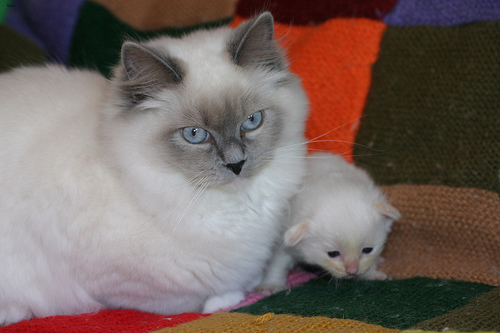
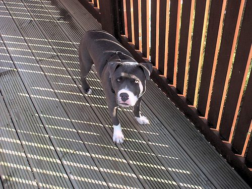
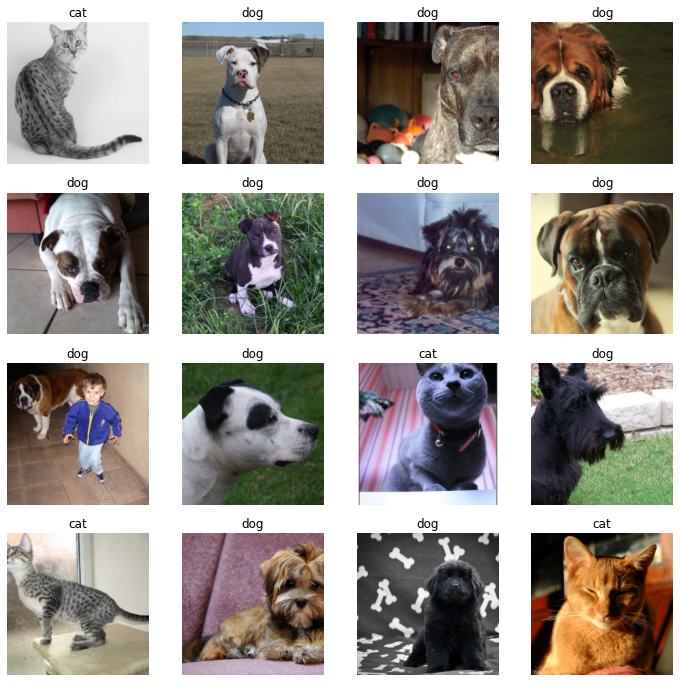
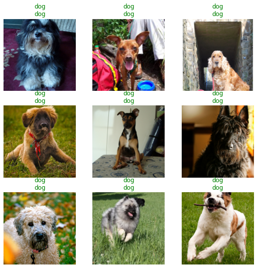
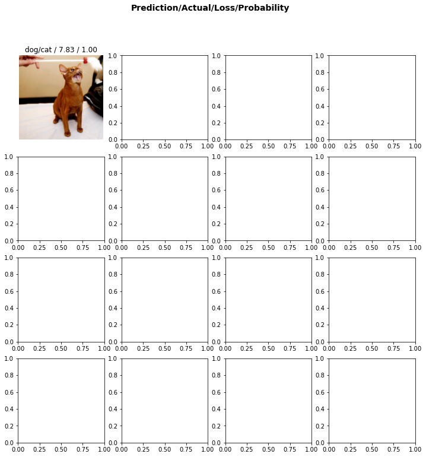
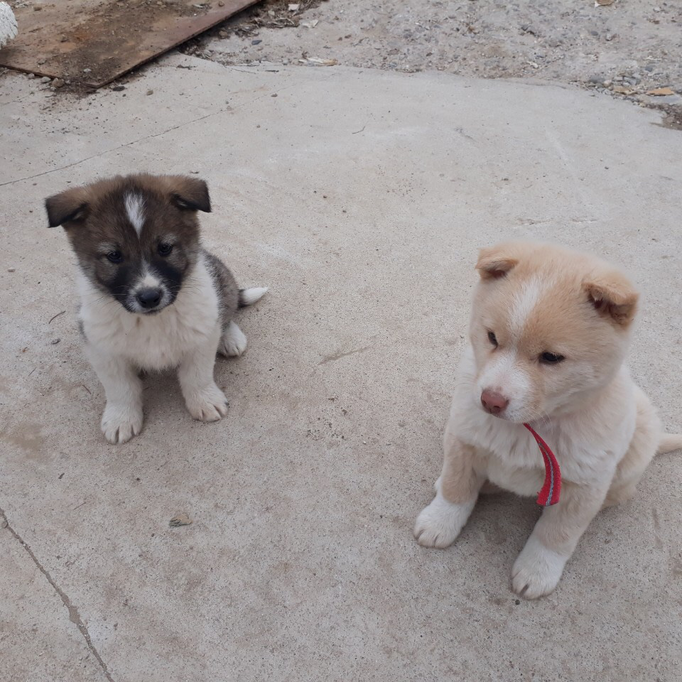

from fastai.vision.all import *기계학습 특강 (1주차) 9월7일 [pytorch]
우리의 1차 목표: 이미지 -> 개/고양이 판단하는 모형을 채용하고, 그 모형에 데이터를 넣어서 학습하고, 그 모형의 결과를 판단하고 싶다. (즉 클래시파이어를 만든다는 소리)
우리의 2차 목표: 그 모형에 “새로운” 자료를 전달하여 이미지를 분류할 것이다. (즉 클래시파이어를 쓴다는 소리)
import
#!nvidia-smiURLs.PETS'https://s3.amazonaws.com/fast-ai-imageclas/oxford-iiit-pet.tgz'path = untar_data(URLs.PETS)/'images'pathPath('/home/csy/.fastai/data/oxford-iiit-pet/images')PILImage.create('/home/csy/.fastai/data/oxford-iiit-pet/images/Abyssinian_1.jpg')
_lst = ['/home/csy/.fastai/data/oxford-iiit-pet/images/Abyssinian_1.jpg','/home/csy/.fastai/data/oxford-iiit-pet/images/Abyssinian_10.jpg']
_lst['/home/csy/.fastai/data/oxford-iiit-pet/images/Abyssinian_1.jpg',
'/home/csy/.fastai/data/oxford-iiit-pet/images/Abyssinian_10.jpg']_lst[0]'/home/csy/.fastai/data/oxford-iiit-pet/images/Abyssinian_1.jpg'PILImage.create(_lst[1])filenames = get_image_files(path)
filenames(#7390) [Path('/home/csy/.fastai/data/oxford-iiit-pet/images/Bombay_13.jpg'),Path('/home/csy/.fastai/data/oxford-iiit-pet/images/beagle_193.jpg'),Path('/home/csy/.fastai/data/oxford-iiit-pet/images/Ragdoll_8.jpg'),Path('/home/csy/.fastai/data/oxford-iiit-pet/images/boxer_106.jpg'),Path('/home/csy/.fastai/data/oxford-iiit-pet/images/keeshond_56.jpg'),Path('/home/csy/.fastai/data/oxford-iiit-pet/images/american_pit_bull_terrier_162.jpg'),Path('/home/csy/.fastai/data/oxford-iiit-pet/images/saint_bernard_136.jpg'),Path('/home/csy/.fastai/data/oxford-iiit-pet/images/staffordshire_bull_terrier_76.jpg'),Path('/home/csy/.fastai/data/oxford-iiit-pet/images/pug_173.jpg'),Path('/home/csy/.fastai/data/oxford-iiit-pet/images/american_pit_bull_terrier_117.jpg')...]filenames[0]Path('/home/csy/.fastai/data/oxford-iiit-pet/images/Bombay_13.jpg')print(filenames[0])
PILImage.create(filenames[0])/home/csy/.fastai/data/oxford-iiit-pet/images/Bombay_13.jpgprint(filenames[1])
PILImage.create(filenames[1])/home/csy/.fastai/data/oxford-iiit-pet/images/beagle_193.jpg
print(filenames[2])
PILImage.create(filenames[2])/home/csy/.fastai/data/oxford-iiit-pet/images/Ragdoll_8.jpg
print(filenames[3])
PILImage.create(filenames[3])/home/csy/.fastai/data/oxford-iiit-pet/images/boxer_106.jpgprint(filenames[4])
PILImage.create(filenames[4])/home/csy/.fastai/data/oxford-iiit-pet/images/keeshond_56.jpgprint(filenames[5])
PILImage.create(filenames[5])/home/csy/.fastai/data/oxford-iiit-pet/images/american_pit_bull_terrier_162.jpgprint(filenames[6])
PILImage.create(filenames[6])/home/csy/.fastai/data/oxford-iiit-pet/images/saint_bernard_136.jpgprint(filenames[7])
PILImage.create(filenames[7])/home/csy/.fastai/data/oxford-iiit-pet/images/staffordshire_bull_terrier_76.jpg
print(filenames[8])
PILImage.create(filenames[8])/home/csy/.fastai/data/oxford-iiit-pet/images/pug_173.jpgprint(filenames[9])
PILImage.create(filenames[9])/home/csy/.fastai/data/oxford-iiit-pet/images/american_pit_bull_terrier_117.jpgprint(filenames[20])
PILImage.create(filenames[20])/home/csy/.fastai/data/oxford-iiit-pet/images/Maine_Coon_266.jpgvector로 되어 있는 tensor
'A'.isupper()Truedef f(fname):
if fname[0].isupper():
return 'cat'
else:
return 'dog'f('dddd')'dog'filenames[0]Path('/home/csy/.fastai/data/oxford-iiit-pet/images/Bombay_13.jpg')ImageDataLoaders.from_name_func??Signature: ImageDataLoaders.from_name_func( path, fnames, label_func, valid_pct=0.2, seed=None, item_tfms=None, batch_tfms=None, bs=64, val_bs=None, shuffle=True, device=None, ) Source: @classmethod def from_name_func(cls, path, fnames, label_func, **kwargs): "Create from the name attrs of `fnames` in `path`s with `label_func`" if sys.platform == 'win32' and isinstance(label_func, types.LambdaType) and label_func.__name__ == '<lambda>': # https://medium.com/@jwnx/multiprocessing-serialization-in-python-with-pickle-9844f6fa1812 raise ValueError("label_func couldn't be lambda function on Windows") f = using_attr(label_func, 'name') return cls.from_path_func(path, fnames, f, **kwargs) File: ~/anaconda3/envs/csy/lib/python3.8/site-packages/fastai/vision/data.py Type: method
dls는 object - 동사 - 명사(method)
size가 다르기 때문에 dls 적용이 되지 않아 resize로 조정을 해주었다.
pathPath('/home/csy/.fastai/data/oxford-iiit-pet/images')dls = ImageDataLoaders.from_name_func(path,filenames,f,item_tfms=Resize(224))
#dlsdls.show_batch(max_n=16)
학습
object
- noun
- data
- 채용할 모델의 이름
- 평가기준 metric
- verb
- 학습
- 판단
ysj = cnn_learner(dls,resnet34,metrics=error_rate)ysj.fine_tune(1)| epoch | train_loss | valid_loss | error_rate | time |
|---|---|---|---|---|
| 0 | 0.138703 | 0.014957 | 0.004060 | 00:10 |
| epoch | train_loss | valid_loss | error_rate | time |
|---|---|---|---|---|
| 0 | 0.061359 | 0.010080 | 0.002706 | 00:11 |
기존 데이터를 잘 맞추는지 확인
filenames[0]Path('/home/csy/.fastai/data/oxford-iiit-pet/images/Bombay_13.jpg')ysj.predict(PILImage.create(filenames[0]))('cat', TensorBase(0), TensorBase([1.0000e+00, 3.5260e-07]))ysj.predict(filenames[0])('cat', TensorBase(0), TensorBase([1.0000e+00, 3.5260e-07]))filenames[1]Path('/home/csy/.fastai/data/oxford-iiit-pet/images/beagle_193.jpg')ysj.predict(filenames[1])('dog', TensorBase(1), TensorBase([2.0373e-04, 9.9980e-01]))ysj.show_results()
오답분석
checker = Interpretation.from_learner(ysj)checker.plot_top_losses(k=16)
좋은 모델인가?
PILImage.create('2022-01-13-cat.jpg')ysj.predict(PILImage.create('2022-01-13-cat.jpg'))('cat', TensorBase(0), TensorBase([1.0000e+00, 3.8330e-16]))PILImage.create(requests.get('https://dimg.donga.com/ugc/CDB/SHINDONGA/Article/5e/0d/9f/01/5e0d9f011a9ad2738de6.jpg').content)img=PILImage.create(requests.get('https://dimg.donga.com/ugc/CDB/SHINDONGA/Article/5e/0d/9f/01/5e0d9f011a9ad2738de6.jpg').content)
ysj.predict(img)('dog', TensorBase(1), TensorBase([2.1535e-06, 1.0000e+00]))img=PILImage.create(requests.get('https://github.com/guebin/STML2022/blob/master/_notebooks/2022-09-06-cat1.png?raw=true').content)
ysj.predict(img)('cat', TensorBase(0), TensorBase([9.9982e-01, 1.8307e-04]))img=PILImage.create(requests.get('https://github.com/guebin/STML2022/blob/master/_notebooks/2022-09-06-cat2.jpeg?raw=true').content)
ysj.predict(img)('cat', TensorBase(0), TensorBase([1.0000e+00, 2.0889e-07]))img=PILImage.create(requests.get('https://github.com/guebin/STML2022/blob/master/_notebooks/2022-09-06-hani01.jpeg?raw=true').content)
ysj.predict(img)('dog', TensorBase(1), TensorBase([9.5189e-06, 9.9999e-01]))img=PILImage.create(requests.get('https://github.com/guebin/STML2022/blob/master/_notebooks/2022-09-06-hani02.jpeg?raw=true').content)
ysj.predict(img)('dog', TensorBase(1), TensorBase([2.0720e-05, 9.9998e-01]))img=PILImage.create(requests.get('https://github.com/guebin/STML2022/blob/master/_notebooks/2022-09-06-hani03.jpg?raw=true').content)
ysj.predict(img)('dog', TensorBase(1), TensorBase([0.0513, 0.9487]))homework
- 임의의 사진으로 잘 맞추는지 확인
PILImage.create('2022-09-07-dogs.jpeg')
ysj.predict(PILImage.create('2022-09-07-dogs.jpeg'))('dog', TensorBase(1), TensorBase([2.7947e-04, 9.9972e-01]))img2=PILImage.create('2022-09-07-dogs.jpeg')
ysj.predict(img2)('dog', TensorBase(1), TensorBase([2.7947e-04, 9.9972e-01]))PILImage.create(requests.get('https://media.npr.org/assets/img/2021/08/11/gettyimages-1279899488_wide-f3860ceb0ef19643c335cb34df3fa1de166e2761-s900-c85.webp').content)img=PILImage.create(requests.get('https://media.npr.org/assets/img/2021/08/11/gettyimages-1279899488_wide-f3860ceb0ef19643c335cb34df3fa1de166e2761-s900-c85.webp').content)
ysj.predict(img)('cat', TensorBase(0), TensorBase([1.0000e+00, 2.5169e-10]))